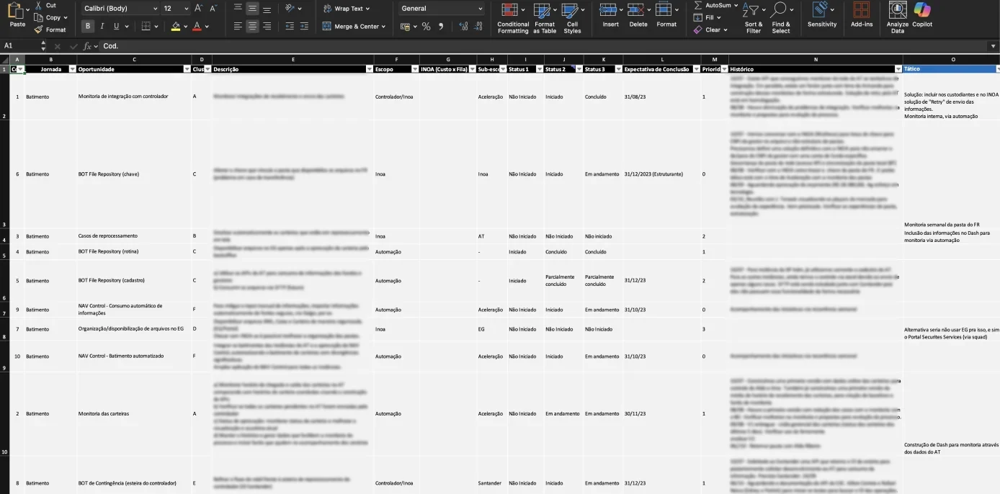

Service blueprint
We translated highly complex, multi-actor processes into a structured view that highlighted pain points across the journey, giving the team clear direction on what needed to be addressed
The blueprints were created in Miro
I was the designer responsible for conducting interviews with the back-office team, mapping their end-to-end journey, and consolidating key opportunities to reduce friction and enhance internal workflows
We explored the operational workflows of investment fund administration and defined a solution map that reduced SLA times, significantly eased the back-office workload, and improved overall operational efficiency
We translated highly complex, multi-actor processes into a structured view that highlighted pain points across the journey, giving the team clear direction on what needed to be addressed
The blueprints were created in Miro

The opportunity map served as a guide for the teams to prioritize and track what needed to be done, using an Excel file that centralized key information about each initiative
Each pain point or group of pain points led to a specific initiative